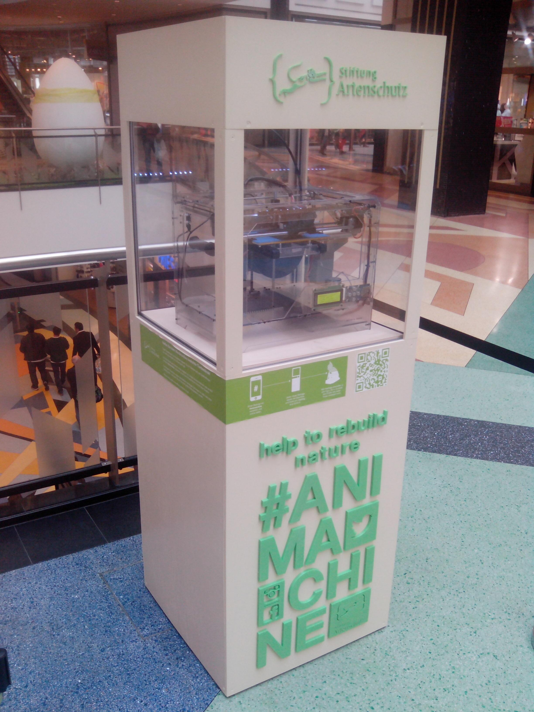
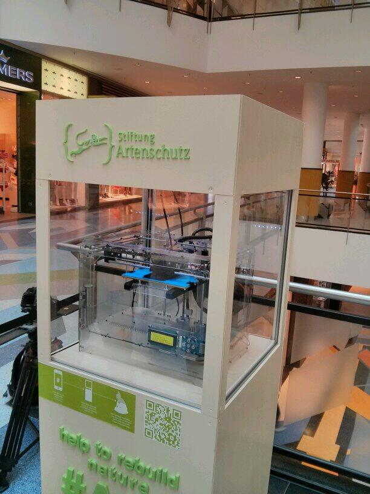
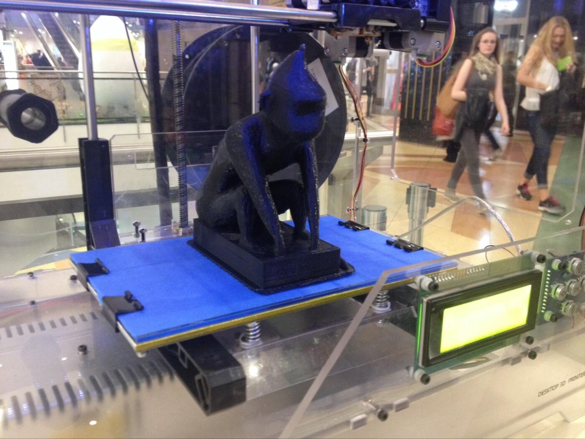
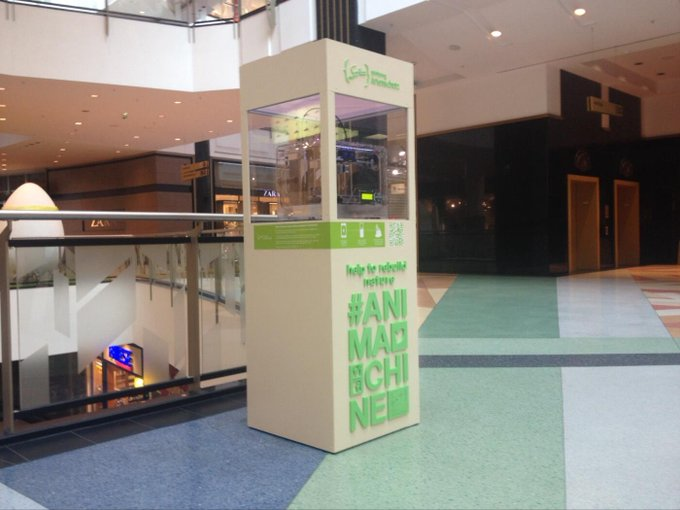
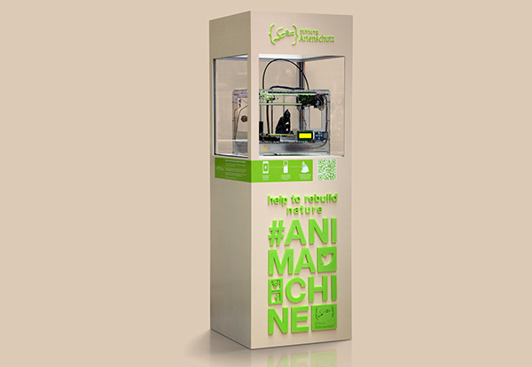
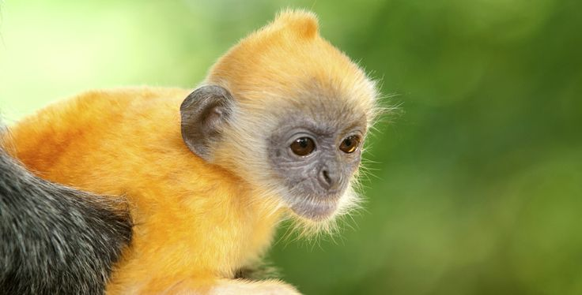
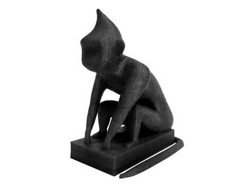
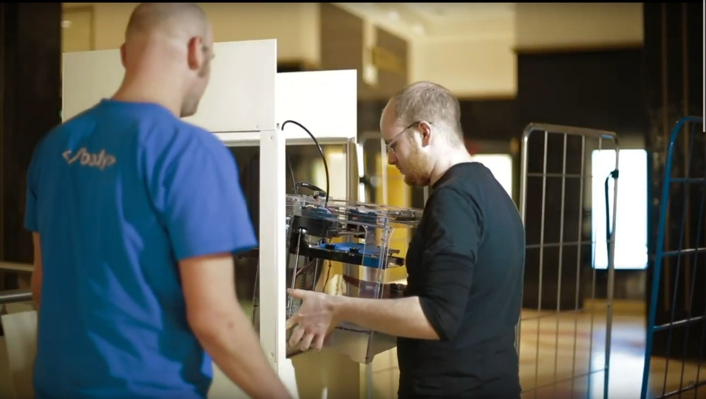
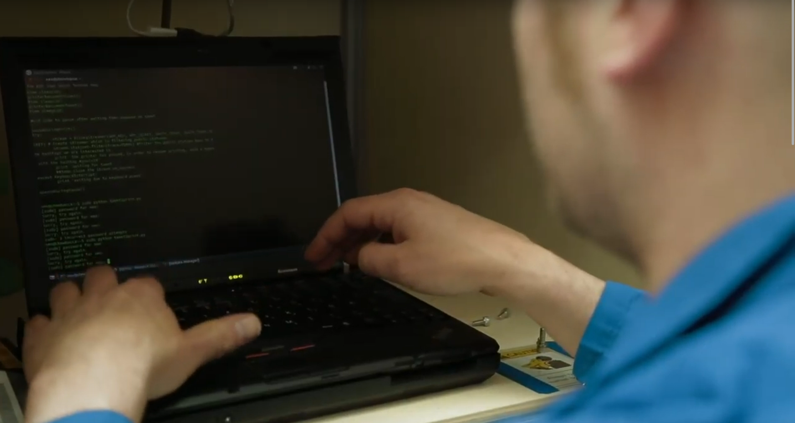
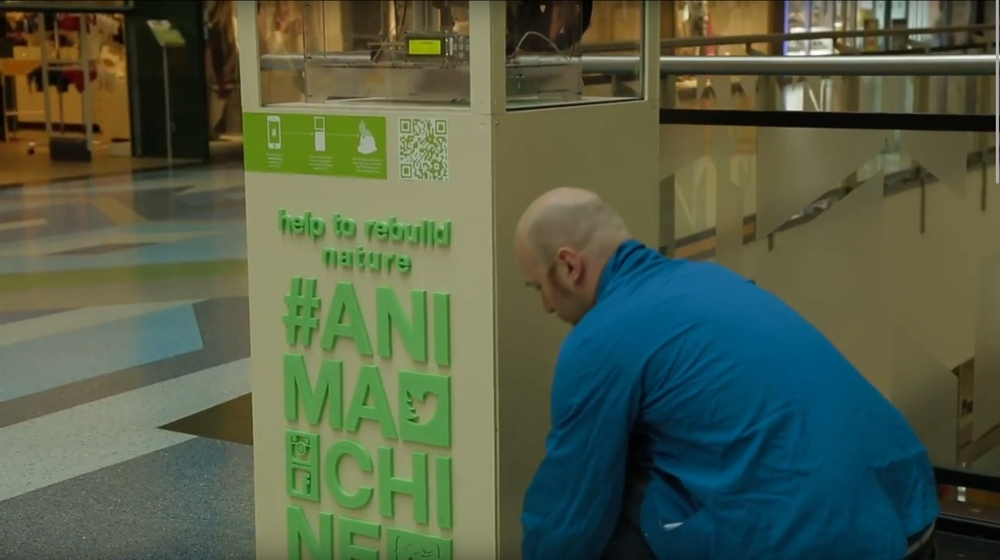

Animachine
Simply by tweeting #animachine, supporters triggered successive layers to be printed on a 3D printer that recreated a model of the endangered animal. I was the lead engineer working with a fantastic team of hackers and nerds at Youin3D in Berlin to design, test and build the system and the code to realise this project. We started with a digital rendering of what the final project should look like. After a short creative briefing about what it should do, given to us by our project partners, we rolled up our sleeves and did the detailed design i.e. the 'how' part. It was then installed as an interactive display in the Alexa Shopping Centre in central Berlin. Our project partners were McCann Worldgroup Deutschland, Stiftung Artenschutz and their respective collaborators.
Project Details / Background
Endangered species regularly feature in social media. Their plight inspires plenty of sympathy and outrage but, sadly, likes and shares have little effect in the real world. How, we asked, could the digital community make a real difference to the Cat-Ba Langur, one of the world’s most endangered species? It often appears in Social Media. There are only 53 left.
#animachine actively engages supporters in literally collaborating to recreate the animal they are helping to save. This powerful visual evidence of their efforts then translates into cash, via auction, all of which is donated to the program dedicated to saving the Cat-Ba Langur. The engaging nature of the #animachine donation platform attracted crowds of supporters. They contributed the thousands of layers needed to build the statues. All of which helped grow awareness. And every cent raised on auction will help grow the Cat-Ba Langur population. #animachine let people reach out of the digital realm. And touch the real world, which made hashtags literally count in real life.
Image Gallery

Animachine Installation - Participative Digital Fabrication for Endangered Species Conservation. Printing in Alexa Shopping Centre, Berlin.
 Animachine Installation - Participative Digital Fabrication for Endangered Species Conservation. Printing in Alexa Shopping Centre, Berlin.
Animachine Installation - Participative Digital Fabrication for Endangered Species Conservation. Printing in Alexa Shopping Centre, Berlin.

Animachine Installation - Participative Digital Fabrication for Endangered Species Conservation. Printing in Alexa Shopping Centre, Berlin.

Cat-Ba Langur 3D model finished printing.

Animachine Installation - Participative Digital Fabrication for Endangered Species Conservation. Printing in Alexa Shopping Centre, Berlin.

Animachine Installation - Participative Digital Fabrication for Endangered Species Conservation. Printing in Alexa Shopping Centre, Berlin.

Cat-Ba Langur

The 3d printed sculptures, modelled by artist Sam3, were auctioned with all proceeds donated towards Cat-Ba Langur conservation.

Jan and I deploying/setting up the system in Alexa Shopping Centre, Berlin.

Jan firing up the Python code I wrote to automate the control of the 3D printer and pause and resume printing based on watching for "#animachine" hashtags in tweets via the REST API from Twitter.

Jan closing up the service panel hiding the computer, UPS (backup power supply), and UMTS modem.